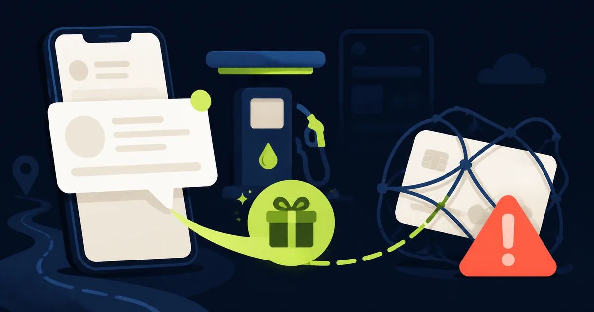

In breve
Non richiedere il bonus dal collegamento ricevuto.
Il 15 maggio 2026 CERT-AGID ha segnalato una serie di SMS che usano il nome INPS e promettono 300 euro per l’aumento del prezzo del carburante. In quattro giorni sono state rilevate 14 campagne su domini diversi. La procedura serve a rubare dati personali e della carta.
Fonti istituzionali controllate. La campagna è documentata da CERT-AGID; le regole per riconoscere le comunicazioni autentiche provengono da INPS.
Come funziona
L’SMS annuncia un sussidio per compensare l’aumento di benzina e diesel e invita ad aprire un collegamento. La pagina, visibile soprattutto da smartphone, riproduce la grafica mobile di INPS e mostra un termine ravvicinato per creare urgenza.
Dopo nome, indirizzo, CAP e telefono compare una schermata di “accredito rapido sulla carta”. Per ricevere i presunti 300 euro vengono richiesti nome del titolare, numero della carta, data di scadenza e CVV. Sono gli stessi dati che possono essere usati per tentare addebiti non autorizzati.
I segnali da riconoscere
- Un bonus inatteso. Non hai presentato alcuna domanda, ma il messaggio sostiene che il denaro sia già disponibile.
- Una scadenza vicinissima. La fretta impedisce di controllare se la misura esiste davvero.
- Il link porta fuori da inps.it. Il nome INPS può comparire in altre parti dell’indirizzo senza renderlo ufficiale.
- Chiede tutti i dati della carta. Un accredito non richiede CVV e data di scadenza attraverso un modulo aperto da un SMS.
Come controllare un vero aiuto INPS
Chiudi il messaggio
Non rispondere e non usare il link. Anche se il mittente appare “INPS”, un SMS può essere falsificato o inserito in una conversazione esistente.
Apri direttamente inps.it
Digita tu l’indirizzo, accedi a MyINPS o usa l’app ufficiale. Le prestazioni e le relative modalità sono pubblicate nei canali istituzionali.
Chiedi conferma all’Istituto
In caso di dubbi usa il Contact Center o una sede INPS, cercando i recapiti sul sito ufficiale.
Hai già compilato il modulo?
- Hai fornito dati personali: interrompi la procedura. Diffida di telefonate successive che dimostrano di conoscere nome, indirizzo o presunto bonus.
- Hai inserito la carta: contatta immediatamente la banca tramite il numero ufficiale, chiedi il blocco o la sostituzione e controlla i movimenti.
- Hai comunicato un codice OTP: informa la banca con urgenza: il codice potrebbe aver autorizzato un’operazione.
- Vedi un addebito: segnalalo subito alla banca e conserva SMS, URL e schermate per l’eventuale denuncia.
Come segnalarlo
Puoi inoltrare l’SMS a malware@cert-agid.gov.it. Evita di trasmettere password, codici temporanei o il numero completo della carta.
Trasparenza
Fonti verificate
Aggiornamenti e correzioni
Nessuna correzione al momento. Per segnalare un errore scrivi a redazione@hackerino.it.
Aiuta la redazione
Hai ricevuto questo SMS?
Puoi inviarci una segnalazione evitando numeri di carta, codici e altri dati riservati.